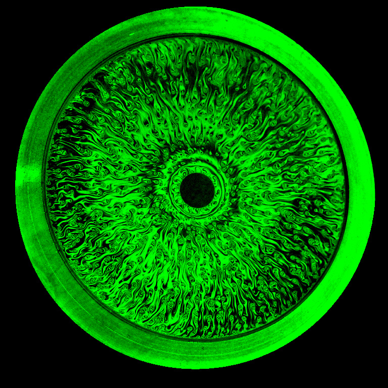
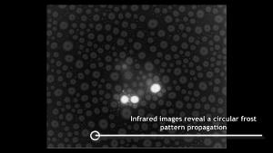
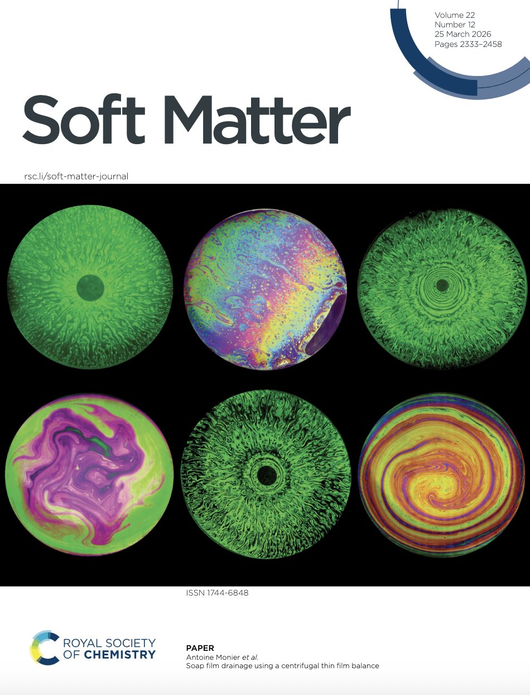
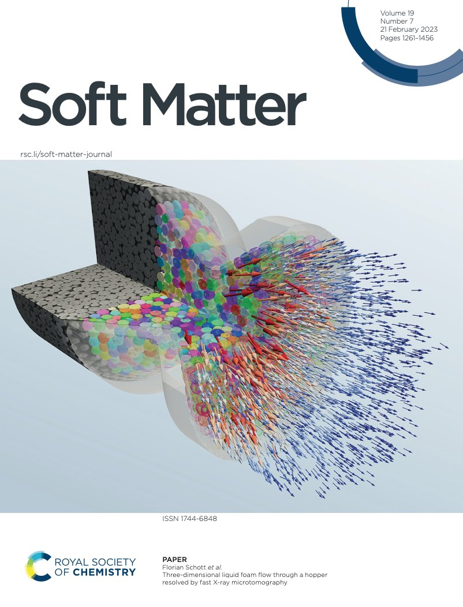
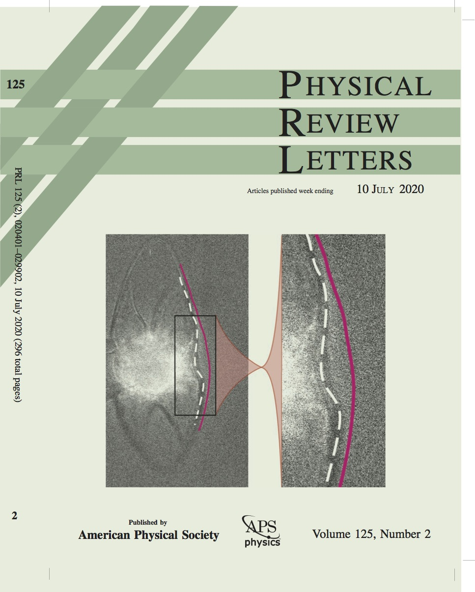
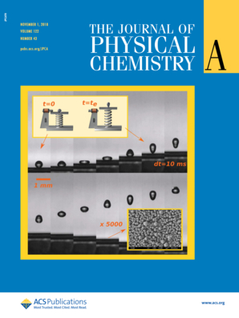
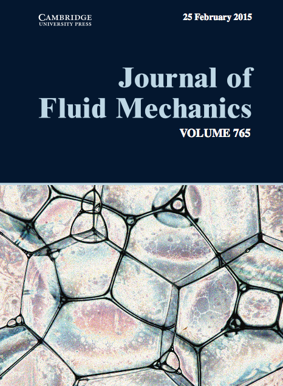
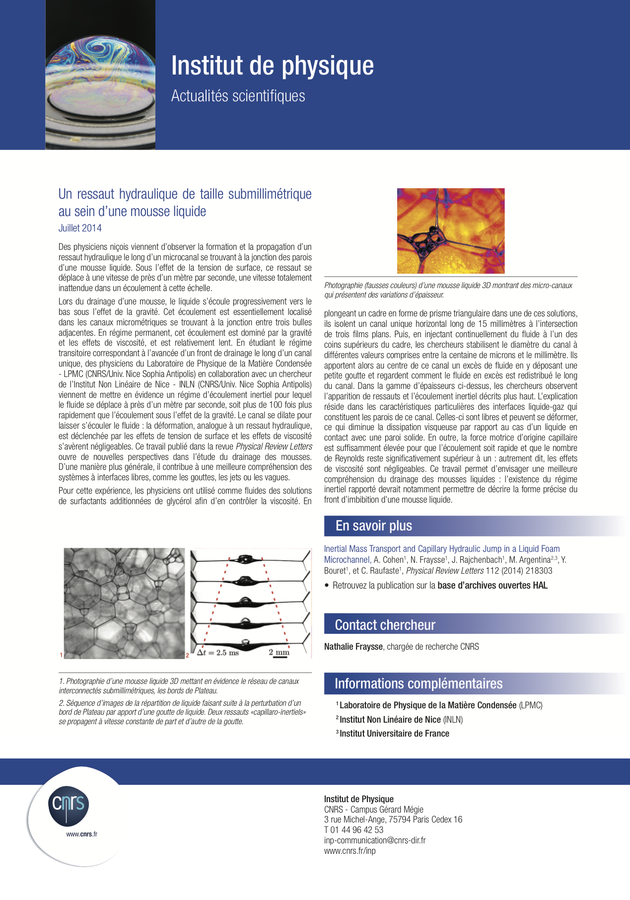
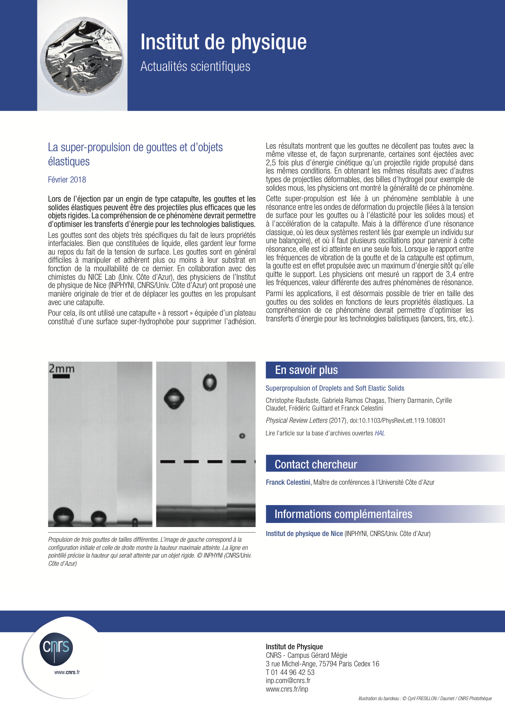

Movies
- Soap film spinning by Antoine Monier (selected for the gallery of fluid motion 2023)
- Dynamics of frost propagation by David Paulovics (selected for the gallery of fluid motion 2023 and winner of the Milton van Dyke Award)
- Flotability in soap films by Alexandre Vigna-Brummer (in French)
- Soap film drainage by François-Xavier Gauci (in French)
- Frost formation by David Paulovics (in French)
- Actuation of droplets on
liquid infused surfaces
- Jet impact on a soap film
- Hole nucleation inside a 2D Leidenfrost droplet
- Hydraulic jumps inside a liquid foam microchannel
- A reactive Leidenfrost droplet
- A Leidenfrost droplet bouncing on a substrate
- Superpropulsion of droplets
- Superpropulsion of photoelastic projectiles
- A vibrating Plateau border
Highlights
The photo from Antoine Monier is among the laureates of the 'la preuve par l'image' competition organized by CNRS.

The movie from David Paulovics is one of three laureates of the Milton van Dyke Award of the 2023 gallery of fluid motion.







